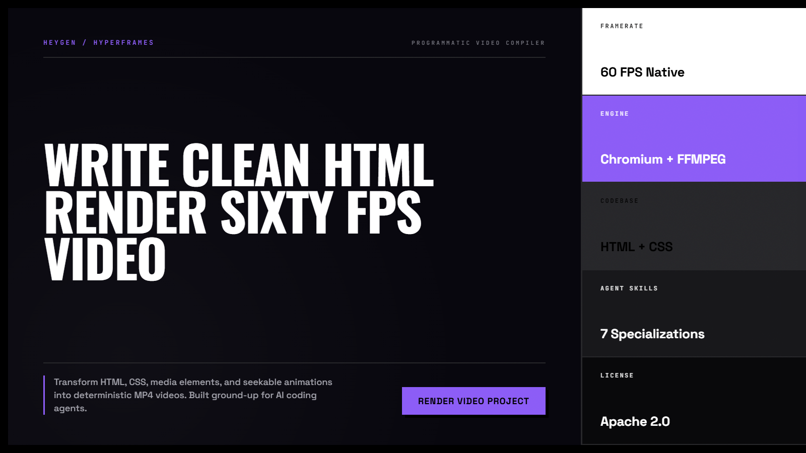
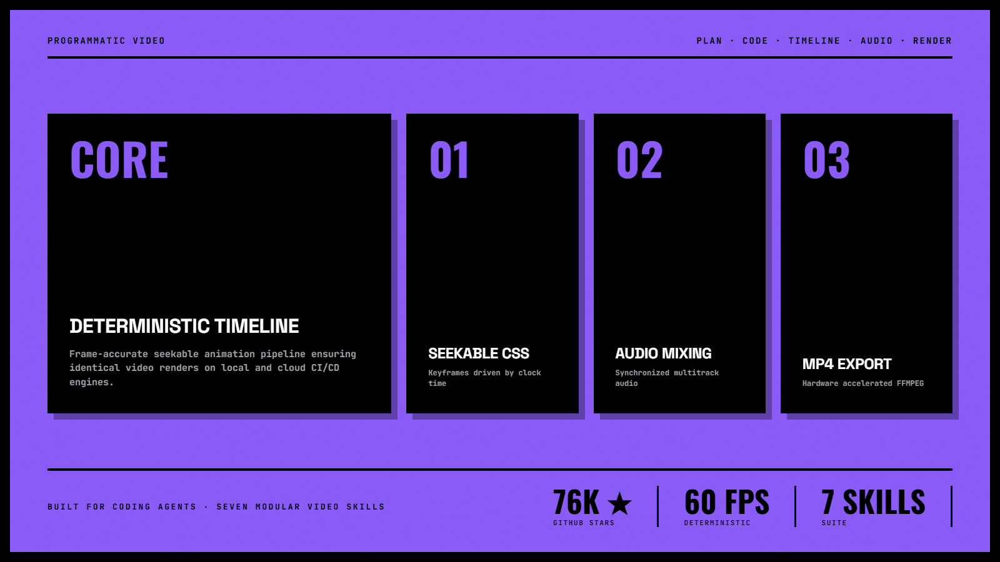
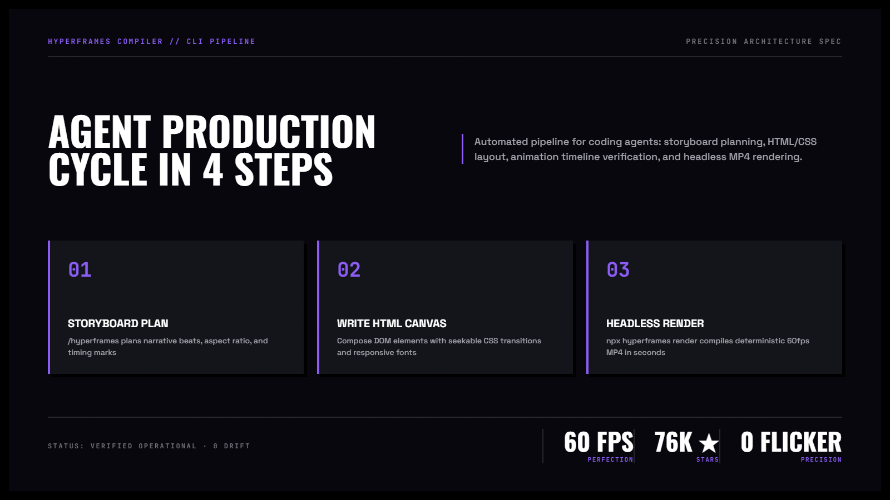

Hyperframes — Dựng Video Programmatic Tất Định từ HTML & CSS
Khung công nghệ kết xuất video mã nguồn mở do HeyGen phát triển (hơn 75.000 sao). "Viết HTML. Xuất Video. Xây dựng cho Agent." Cho phép lập trình viên và coding agent dùng cú pháp quen thuộc (HTML, CSS, seekable animation) để sản xuất video MP4 60 FPS chuẩn xác tới từng khung hình mà không cần mở các phần mềm dựng video phức tạp.
npx hyperframes skills update.

Nhấp để phóng to1. Bảng đối chiếu: Dựng Video truyền thống vs. Hyperframes Programmatic
Thay vì mất hàng giờ kéo thả timeline thủ công trong Premiere hoặc After Effects, Hyperframes đưa sức mạnh của mã nguồn vào quy trình sản xuất video:
| Đặc tính | Phần mềm dựng video đồ họa (GUI) | Hyperframes Programmatic Video |
|---|---|---|
| Khả năng AI tự động hóa | Rất khó; agent không thể thao tác chuột và kéo layer chính xác. | Tuyệt đối; agent thuần thục việc viết HTML, CSS và cấu hình keyframe thời gian. |
| Tính tất định (Determinism) | Dễ lệch khung hình do codec và môi trường máy tính khác nhau. | Đồng bộ tuyệt đối: mỗi mili-giây tương ứng đúng một trạng thái DOM cố định. |
| Tái sử dụng & Mở rộng | Thay đổi số liệu hoặc văn bản phải mở lại project và render lại từ đầu bằng tay. | Chỉ cần truyền biến dữ liệu mới (JSON/Props) là tự động sinh hàng nghìn video biến thể. |
| Tích hợp vào CI/CD | Hầu như không thể tích hợp vào pipeline kiểm thử hoặc triển khai tự động. | Chạy headless qua CLI hoặc Docker container trên bất kỳ máy chủ Linux nào. |

Nhấp để phóng to2. Vòng lặp sản xuất video 4 bước cho Coding Agent
Agent xác định thời lượng, nhịp điệu (beats), tỷ lệ khung hình (16:9 hoặc 9:16) và các mốc chuyển cảnh.
Viết mã HTML và CSS chuẩn, bố trí typography, logo, bảng biểu và hiệu ứng nền.
Sử dụng các class và thuộc tính CSS animation gắn chặt với đồng hồ thời gian nội bộ của Hyperframes.
Chạy lệnh kết xuất để tổng hợp các frame thành file video MP4 chất lượng cao sẵn sàng phát hành.

Nhấp để phóng to3. Minh họa trực quan: Cơ chế kết xuất từ DOM sang MP4
Hyperframes kết hợp nhân Chromium headless siêu tốc với thư viện FFMPEG được tăng tốc phần cứng:
4. Hệ sinh thái 7 kỹ năng chuyên sâu của Hyperframes
/hyperframes — Trợ lý Đạo diễn Kỹ thuật
Kỹ năng trung tâm chứa toàn bộ hợp đồng sản xuất: định dạng phim, bố cục tiêu đề phụ, overlay và quy chuẩn motion.
/hyperframes-cli & /media-use — Quản lý Tài nguyên & Render
Tự động hóa lệnh dòng lệnh kết xuất video, tải video mẫu và xử lý đồng bộ các tệp âm thanh, hình ảnh cục bộ.
/figma — Chuyển đổi Thiết kế Figma sang Video
Nhập trực tiếp các frame từ Figma và biến chúng thành các cảnh chuyển động sống động.
/remotion-to-hyperframes — Di chuyển Dự án
Chuyển đổi các composition viết bằng Remotion React sang định dạng chuẩn HTML/CSS nhẹ nhàng hơn của Hyperframes.
5. Tạo video đầu tiên bằng mã nguồn trong 3 bước
Cập nhật bộ kỹ năng Hyperframes
Mở cửa sổ dòng lệnh và cài đặt nhóm kỹ năng cốt lõi cho agent:
npx hyperframes skills updateYêu cầu agent tạo một đoạn video ngắn
Ra lệnh bằng ngôn ngữ tự nhiên trong phiên làm việc của Claude Code hoặc Antigravity:
Dùng /hyperframes tạo đoạn video giới thiệu sản phẩm dài 10 giây với tiêu đề fade-in nổi bật, nền hạt chuyển động chậm và hiệu ứng âm thanh xuất hiện ở giây thứ 2.Xem trước và kết xuất video
Chạy lệnh kết xuất video MP4 cục bộ trên máy tính:
npx hyperframes render --output ./intro.mp4Bí quyết của video chất lượng cao nằm ở việc dùng chuyển động seekable thay vì chuyển động dựa trên thời gian thực tế (wall-clock). Nhờ vậy, dù máy chủ kết xuất mất 0.1 giây hay 5 giây cho một frame phức tạp, video thành phẩm vẫn giữ vững tốc độ khung hình 60 FPS mượt mà không bao giờ bị giật hình.